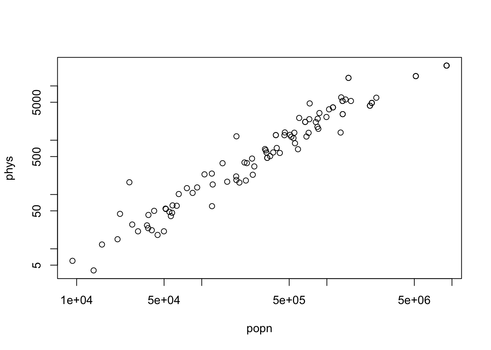
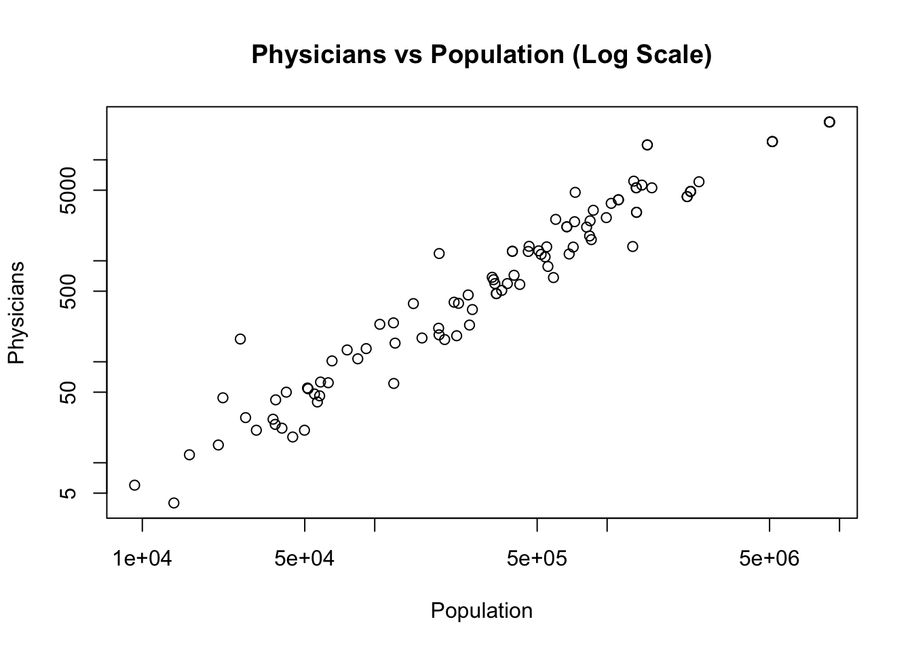

## ydata --- observations of the variable of interest## xdata --- observations of the auxilliary variable## N --- population size## the output is the ratio of ybarU/xbarUsrs_ratio_est <-function (ydata, xdata, N =Inf){ n <-length (xdata) xbar <-mean (xdata) ybar <-mean (ydata) B_hat <- ybar / xbar d <- ydata - B_hat * xdata var_d <-sum (d^2) / (n -1) sd_B_hat <-sqrt ((1- n/N) * var_d / n) / xbar mem <-qt (0.975, df = n -1) * sd_B_hat output <-c (B_hat, sd_B_hat, B_hat - mem, B_hat + mem )names (output) <-c("Est.", "S.E.", "ci.low", "ci.upp" ) output}## ydata --- observations of the variable of interest## xdata --- observations of the auxilliary variable## N --- population size## xbarU --- population mean of auxilliary variable## the output is the estimate mean or total (est.total=TRUE)srs_reg_est <-function (ydata, xdata, xbarU, N =Inf, est.total =FALSE){ n <-length (ydata) lmfit <-lm (ydata ~ xdata) Bhat <- lmfit$coefficients efit <- lmfit$residuals SSe <-sum (efit^2) / (n -2) yhat_reg <- Bhat[1] + Bhat[2] * xbarU se_yhat_reg <-sqrt ((1-n/N) * SSe / n) mem <-qt (0.975, df = n -2) * se_yhat_reg output <-c(yhat_reg, se_yhat_reg, yhat_reg - mem, yhat_reg + mem)if (est.total) {if(!is.finite(N)) stop("N must be finite for estimating population total" ) output <- output * N }names (output) <-c("Est.", "S.E.", "ci.low", "ci.upp" ) output}## sdata --- a vector of original survey data## N --- population size## to find total, multiply N to the estimate returned by this functionsrs_mean_est <-function (sdata, N =Inf){ n <-length (sdata) ybar <-mean (sdata) se.ybar <-sqrt((1- n / N)) *sd (sdata) /sqrt(n) mem <-qt (0.975, df = n -1) * se.ybarc (Est. = ybar, S.E. = se.ybar, ci.low = ybar - mem, ci.upp = ybar + mem)}# total estimation for datasets collected with UPS with Replacementupswr_total_est <-function (total, psi){ srs_mean_est (total/psi, N =Inf)}# ratio estimation for datasets collected with UPS with Replacementupswr_ratio_est <-function (total, M, psi){srs_ratio_est (total/psi, M/psi, N =Inf)}
6.2 Analysis of a dataset (student study hours) collected by UPSWR
Call:
lm(formula = hrs ~ Mi)
Residuals:
1 2 3 4 5
-29.825 -8.997 -8.997 12.847 34.972
Coefficients:
Estimate Std. Error t value Pr(>|t|)
(Intercept) 70.9820 31.5534 2.250 0.1100
Mi 1.4101 0.4195 3.362 0.0437 *
---
Signif. codes: 0 '***' 0.001 '**' 0.01 '*' 0.05 '.' 0.1 ' ' 1
Residual standard error: 28.52 on 3 degrees of freedom
Multiple R-squared: 0.7902, Adjusted R-squared: 0.7203
F-statistic: 11.3 on 1 and 3 DF, p-value: 0.04368
Code
## total hrs spent by all studentsupswr_total_est (total = hrs, psi = psi)
Est. S.E. ci.low ci.upp
1749.0144 222.4218 1131.4724 2366.5563
Code
## mean hrs spent by each studentupswr_ratio_est (total = hrs, M = Mi, psi = psi)
Est. S.E. ci.low ci.upp
2.7032679 0.3437741 1.7487981 3.6577378
6.3 Analysis of a dataset (statepop.csv) collected with one-stage UPSWR
The file “statepop.csv” is a dataset from an unequal-probability sample of 100 counties in the United States. Counties were chosen using the cumulative-size method from the listings in the County and City Data Book (U.S. Census Bureau, 1994) with probabilities proportional to their populations. The total population for all counties is \(M_0 = \sum_{i=1} M_i = 255,077,536\). Sampling was done with replacement, so very large counties occur multiple times in the sample. For example, Los Angeles County, with the largest population in the United States, occurs four times.
Code
statepop <-read.csv ("data/statepop.csv")statepop
Code
M0 <-255077536## pop of USA in 1992popn <- statepop$popn ## pop per county in 1992psi <- popn / M0phys <- statepop$physplot (popn, phys, log="xy")

Code
summary(lm (phys~psi))
Call:
lm(formula = phys ~ psi)
Residuals:
Min 1Q Median 3Q Max
-2241.1 -564.9 -256.7 -125.8 9884.9
Coefficients:
Estimate Std. Error t value Pr(>|t|)
(Intercept) 152.0 185.3 0.821 0.414
psi 687788.5 21708.5 31.683 <2e-16 ***
---
Signif. codes: 0 '***' 0.001 '**' 0.01 '*' 0.05 '.' 0.1 ' ' 1
Residual standard error: 1623 on 98 degrees of freedom
Multiple R-squared: 0.9111, Adjusted R-squared: 0.9101
F-statistic: 1004 on 1 and 98 DF, p-value: < 2.2e-16
Code
# estimate the total number of physicians in USAupswr_total_est (phys, psi)
Est. S.E. ci.low ci.upp
570304.30 41401.23 488155.27 652453.32
Code
# estimate number of physicians per capitaupswr_ratio_est (phys, popn, psi)
Est. S.E. ci.low ci.upp
0.0022358076 0.0001623084 0.0019137525 0.0025578627
Compare with an estimate based on an SRS sample (Assignment 3 Question 3)
Code
# read srs sample of size 100counties <-read.csv ("data/counties.csv", na ="-99")counties
Code
plot(physician~totpop, data=counties, log="xy")
Warning in xy.coords(x, y, xlabel, ylabel, log): 5 y values <= 0 omitted from
logarithmic plot

Code
summary (lm(physician~totpop, data=counties))
Call:
lm(formula = physician ~ totpop, data = counties)
Residuals:
Min 1Q Median 3Q Max
-767.24 -43.44 4.84 32.93 3105.60
Coefficients:
Estimate Std. Error t value Pr(>|t|)
(Intercept) -5.423e+01 3.490e+01 -1.554 0.123
totpop 2.965e-03 6.519e-05 45.477 <2e-16 ***
---
Signif. codes: 0 '***' 0.001 '**' 0.01 '*' 0.05 '.' 0.1 ' ' 1
Residual standard error: 340.3 on 98 degrees of freedom
Multiple R-squared: 0.9548, Adjusted R-squared: 0.9543
F-statistic: 2068 on 1 and 98 DF, p-value: < 2.2e-16
Code
totpop <-255077536N <-3141# total number of counties# naive estimate srs_mean_est (counties$physician, N =3141) *3141
Est. S.E. ci.low ci.upp
933410.97 491982.79 -42789.62 1909611.56
Code
# ratio estimatesrs_ratio_est (counties$physician, counties$totpop, N =3141) * totpop
Est. S.E. ci.low ci.upp
639506.03 87885.27 465122.60 813889.46
Code
# regression estimatesrs_reg_est (counties$physician, counties$totpop, totpop/N, N = N) * N
Est. S.E. ci.low ci.upp
585870.6 105177.4 377149.4 794591.8
Code
# From the textbook by Lohr, the true value is: total_physician <-532638
6.4 Analysis of a dataset (studenthrs.csv) collected with two-stage UPSWR
Code
studenthrs <-read.table ("data/studentshrs.txt", header = T)## add sampling probability to the datastudenthrs$cpsi <- studenthrs$class_size/647studenthrs
Code
## data --- original data frame for holding data## sid --- variable recording sample id of psu, note that, ## sid must be different when the same psu is surveyed multiple times## csize --- variable recording cluster (psu) population size (not sample size)## cpik --- sampling probability for each cluster## yvar --- variable of interest## N --- total number of clusters (psus)cluster_upswr_ratio_est <-function (data, sid, csize, cpsi, yvar,show.cluster.summary=TRUE){ clust <- data[, sid] ydata <- data [, yvar] ## cluster-wise summary ybari <-tapply (ydata, clust, mean) Mi <-tapply (data [,csize], clust, function (x) x[1]) psi <-tapply (data [,cpsi], clust, function (x) x[1])## the same as total in cluster if Mi = mi t_hat_cls <- ybari * Mi if(show.cluster.summary){cat ("Cluster level Summary:\n")print(data.frame(Mi,psi,ybari, ti=t_hat_cls, ti_psi=t_hat_cls/psi,Mi_psi=Mi/psi)) }## apply ratio estimate to t_hat_cls and Misrs_ratio_est (t_hat_cls/psi, Mi/psi)}cluster_upswr_ratio_est (studenthrs, "sid" , "class_size", "cpsi", "hrs")
Est. S.E. ci.low ci.upp
2.5000000 0.3605551 1.4989385 3.5010615
6.5 Simulation Studies for UPSWR using agpop data
Code
# Read population dataagpop <-read.csv ("data/agpop.csv", na ="-99")## removing the counties with NA in either acres92 or acres87agpop <-subset(agpop, subset =!is.na(agpop$acres92) &!is.na(agpop$acres87))N <-nrow (agpop); N
6.6 Analysis of a dataset (student study hours) collected by UPSWO (without replacement)
Code
## data --- original data frame for holding data## cname --- variable recording cluster (psu) identity## csize --- variable recording cluster (psu) population size (not sample size)## cpik --- sampling probability for each cluster## yvar --- variable of interest## N --- total number of clusters (psus)cluster_upswo_ratio_est <-function (data, cname, csize, cpik, yvar){ clust <- data[,cname] ydata <- data [, yvar] ## cluster-wise summary ybari <-tapply (ydata, clust, mean) Mi <-tapply (data [,csize], clust, function (x) x[1]) pik <-tapply (data [,cpik], clust, function (x) x[1])## the same as total in cluster if Mi = mi t_hat_cls <- ybari * Mi ## apply ratio estimate to t_hat_cls and Misrs_ratio_est (t_hat_cls/pik, Mi/pik)}classpps <-read.csv ("data/classpps.csv")classpps